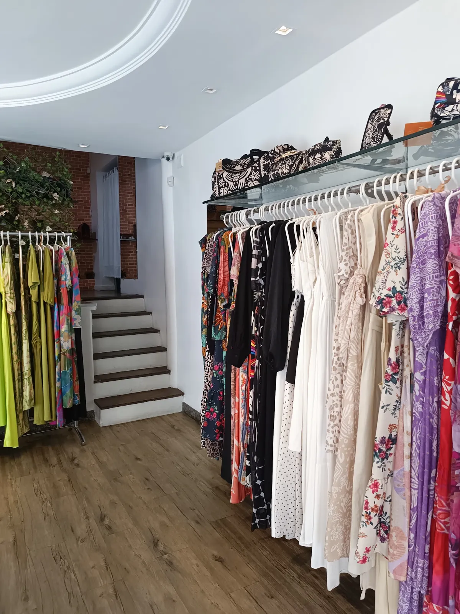
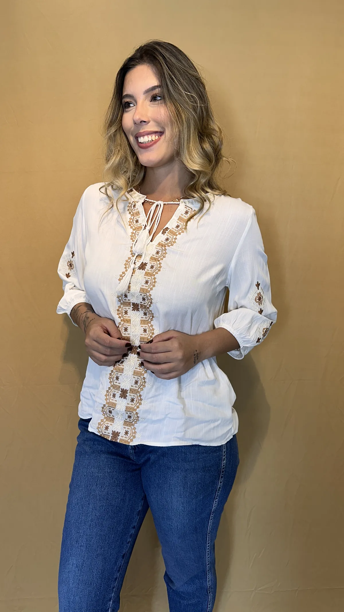
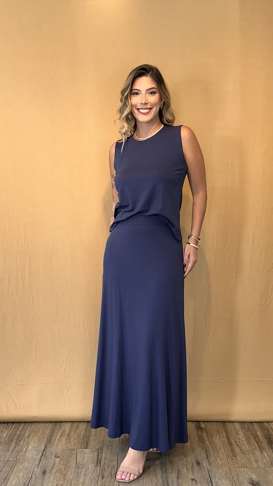
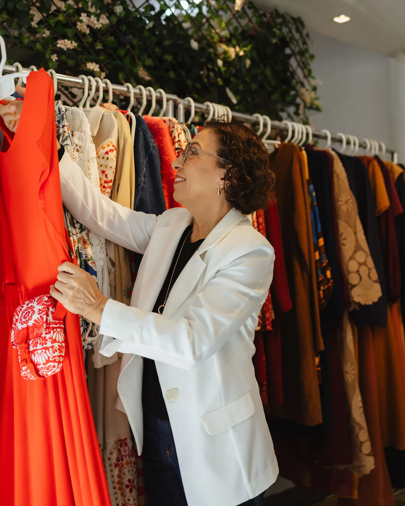
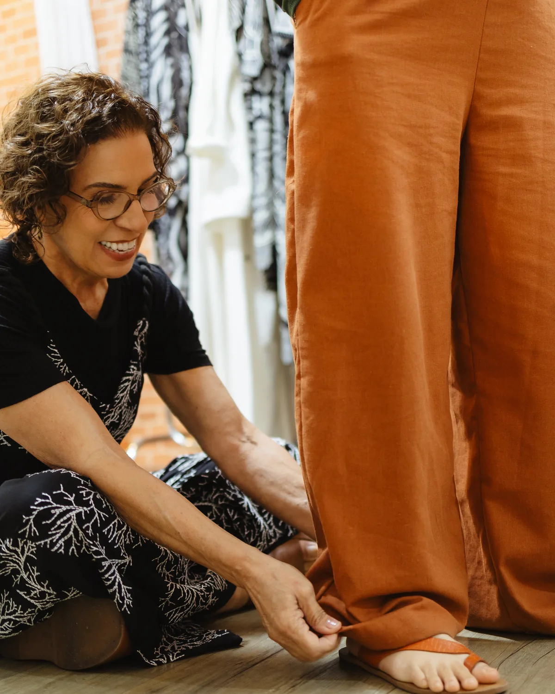

1
O armário está cheio e falta o que vestir
Muita roupa, pouca combinação, e a sensação de que sempre falta mais uma peça.
Um horário na loja só para você, com quem veste mulheres desde 1983.
A Cláudia olha o seu corpo de hoje, descobre com você o seu estilo e monta os looks ali mesmo, com você experimentando cada peça.
A Cláudia reserva poucos horários por semana, e cada um é de uma cliente só.

Muita roupa, pouca combinação, e a sensação de que sempre falta mais uma peça.

A peça que encanta no cabide nem sempre favorece no corpo. A Cláudia mostra o porquê e o que valoriza o seu.

No trabalho e fora dele, a roupa fala antes de você. A consultoria aproxima o que você veste da imagem que quer passar.
Canetinha, dieta, uma fase nova
Emagrecer muda mais que o número da etiqueta. A roupa de antes fica larga, o tamanho que você usava deixa de valer, e o espelho mostra uma mulher que ainda está se conhecendo.
Na consultoria, a Cláudia olha o corpo de agora, mostra o que valoriza cada parte dele e monta com você os looks dessa fase, experimentando na loja.
“Não é só reduzir a numeração, elas não sabem o estilo delas.”
Cláudia Amarante
Pergunta que chega à loja
“Estou usando a canetinha e meu corpo ainda está mudando. Vale fazer a consultoria agora?”
Vale conversar. Conte para a Cláudia em que momento você está, e vocês decidem juntas a melhor hora.
Na loja, com hora marcada
Um horário inteiro, só seu. É assim que ele acontece.
Você chega, toma um café e conta para a Cláudia o seu momento: a rotina, o que gosta de vestir, o que não funciona mais e a imagem que quer passar.
A Cláudia aplica com você o teste de estilo. Experimente uma das perguntas:
Ela tira as medidas de ombro, cintura e quadril e mostra o que valoriza o seu corpo.
Com o seu estilo e as suas medidas, a Cláudia monta os looks com peças da loja, e você experimenta cada um ali mesmo.
Teste de estilo · pergunta 3 de 12
Qual elogio você mais gosta de ouvir?
O teste inteiro tem 12 perguntas, com roupas, sapatos, bolsas e acessórios, e mostra o seu estilo predominante.
Ficha do corpo
A peça que encanta no cabide nem sempre favorece no corpo. Um tubinho que fica perfeito numa ampulheta pode apagar a cintura de um corpo retângulo. O que decide é a proporção entre ombro, cintura e quadril, e ela se mede com fita métrica.



Você leva para casa um material com o seu estilo e os seus looks, para consultar depois.
Dentro da loja, sem obrigação
A consultoria acontece na loja para você experimentar o que a Cláudia sugere, em vez de só imaginar. Se gostar de alguma peça, leva. Comprar não é obrigação.
Se a peça certa para você não estiver na Virtut, a Cláudia providencia ou indica onde encontrar.
A Cláudia Amarante veste mulheres desde 1983. Criou a marca Virtut, vendida em lojas do Brasil inteiro e também na Alemanha e em Tenerife, e desde 2005 atende na loja do Gutierrez.
Na loja, ela olha a cliente e já percebe o tipo físico e o que vai vestir bem. A consultoria dá a esse olhar um horário inteiro, só seu.
Looks sempre lindos com tudo que está na moda. Atendimento de primeira!
Ver no Googlekeniajeber Essa loja é muito especial!! Como cliente a anos vejo o cuidado e o acolhimento diferenciado!! As peças são lindas!!❤️
1 curtidaResponder
vaniam.rocha Claudia, gosto muito das roupas de sua loja e do seu atendimento que é um diferencial👏
1 curtidaResponder
Valor e horário
O valor é combinado na conversa com a Cláudia, conforme o formato que você escolher.
Não é obrigação. Você experimenta o que a Cláudia sugere e leva só o que quiser.
Para a consultoria, sim. Para conhecer a loja, é só vir no horário de funcionamento.
Quando o corpo muda
Ajuda. A Cláudia olha o corpo de agora, mostra o que valoriza e monta looks com você na loja. As peças compradas na Virtut também podem ser ajustadas.
Vale conversar. Conte para a Cláudia em que momento você está, e vocês decidem juntas a melhor hora.
Quem atende, formato e presente
Tem. Além de mais de 40 anos vestindo mulheres, fez três cursos de consultoria de estilo, dois deles com Anita Rezende, em Belo Horizonte.
Por enquanto, só na loja, no Gutierrez.
Pode. Há vale-presente de consultoria, no valor que você quiser, pelo WhatsApp.
A Cláudia reserva poucos horários por semana para a consultoria. Cada horário é de uma cliente só, com tempo para experimentar sem pressa.
A primeira conversa é pelo WhatsApp e não compromete nada.
Chame a Cláudia e conte o que você procura. Rua General Andrade Neves, 267, Gutierrez, Belo Horizonte.
Até duas mensagens por mês, com o que chegou na loja, e as datas fortes: Black Friday, Natal e Dia das Mães. Para sair, é só pedir.